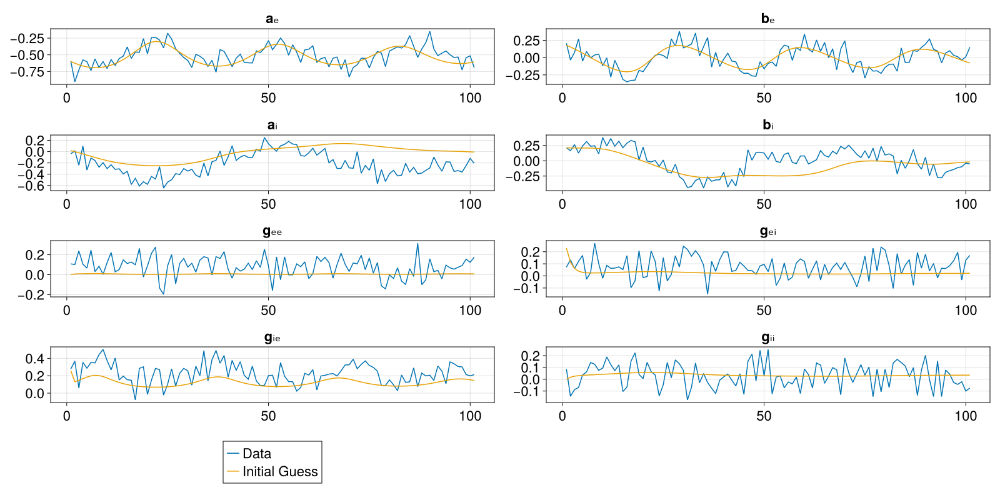
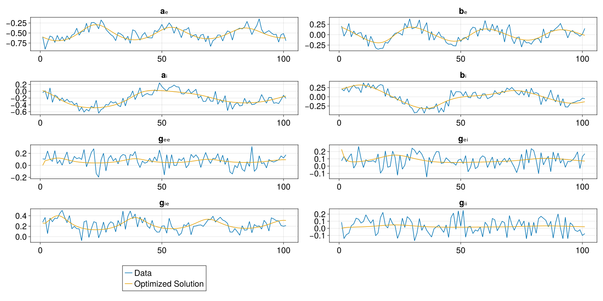

Parameter Fitting using Optimization
Introduction
Until now we have worked on solving what is known as the forward problem, that is constructing and simulating systems of differential equations. We will now work on the inverse problem, which is also known as parameter fitting. Our current workflow starts with a given dataset and a model and in the end we want to retrieve the model parameters that best match the dataset. In other words, if we are to simulate the model using these optimized parameters, then we will get back data that is as close as possible to our original dataset.
We will work with fictive data, that is we will use a model to generate our fictive dataset given some ground truth parameters and then we will use this data to fit the model. Ideally we want the optimized parameters after the fitting process to be the same as the ground truth parameters we used to generate our data. Even though this example is using fictive data, this workflow is a recommended first step in a parameter fitting analysis, as it tells us if and which parameters are even possible to retrieve using our current model and data.
The workflow to fit a model to real data is almost identical to this example with the exception that we do not need to run an initial simulation to generate data. Instead we would just read it from a file, as we have previously done, e.g. using CSV.jl and DataFrames.jl.
In this parameter fitting process we will use an optimization approach to minimize the least squares error between the fictive data and the model simulations. One can easily swap the least squares loss function with any other optimization objective. Namely we will use the LBFGS optimizer, a quasi-Newton method that computes the Jacobian matrix of the objective function and approximates the inverse of its Hessian [1].
Learning goals
- implement parameter fitting using optimization methods.
- introduce this workflow as a first step in any parameter fitting analysis to check the limits of our approach.
Model Definition
We will be using a next generation neural mass model of E-I balance here, which we have seen before. We will treat the four coupling coefficients between the excitatory and inhibitory componenets of the model (excitatory-excitatory, excitatory-inhibitory, inhibitory-excitatory and inhibitory-inhibitory) as the unknown parameters to be fitted.
using Neuroblox
using OrdinaryDiffEqTsit5
using OptimizationOptimJL ## provides LBFGS and other Optim.jl solvers
using ForwardDiff ## enables AutoForwardDiff() for exact gradient computation
using CairoMakie
using Distributions
using Random
Random.seed!(1)
@graph g begin
@nodes nm = NextGenerationEI(; kₑₑ=2, kᵢᵢ=1.5, kₑᵢ=5.5, kᵢₑ=7)
end
tspan = (0, 100)
t_save = first(tspan):last(tspan) ## define the exact timepoints when data/simulation will be saved
# ground truth parameter values, ideally the ones to be retrieved after optimization
p_ground_truth = [2, 1.5, 5.5, 7]
prob = ODEProblem(
g,
[],
tspan,
[nm.kₑₑ => p_ground_truth[1], nm.kᵢᵢ => p_ground_truth[2], nm.kₑᵢ => p_ground_truth[3], nm.kᵢₑ => p_ground_truth[4]];
saveat=t_save
)
# generate fictive data, aka the ground truth
data = solve(prob, Tsit5());We add some observation noise to our fictive data to make it look more realistic. At each timepoint each state receives noise that is sampled from a Normal distribution around 0 with a standard deviation of 0.1 .
noise_distribution = Normal(0, 0.1)
# Extract the state matrix (n_states × n_timepoints) and add noise to a fresh copy
data_matrix = Array(data) .+ rand(noise_distribution, size(data));Initial Guess for Parameters
For most optimization methods we need to provide an initial guess for the parameters to be fitted. We construct an ODEProblem directly with the initial-guess parameter values.
init_prob = ODEProblem(g, [], tspan,
[nm.kₑₑ => 0.2, nm.kᵢᵢ => 3.3, nm.kₑᵢ => 2.0, nm.kᵢₑ => 3.5])
sol = solve(init_prob, Tsit5(); saveat=t_save)
state_names = state_symbols(typeof(nm))
state_syms_namespaced = [getproperty(nm, s) for s in state_names]
# Build a Tables.jl-compatible table from the noisy data:
# each row is one time point with a :t field and one field per state symbol.
nt_keys = (:t, state_syms_namespaced...)
data_table = [NamedTuple{nt_keys}((data.t[j], data_matrix[:, j]...))
for j in axes(data_matrix, 2)]
fig = Figure(size = (1600, 800), fontsize=22)
axs = [
Axis(fig[1,1], title=String(state_names[1])),
Axis(fig[1,2], title=String(state_names[2])),
Axis(fig[2,1], title=String(state_names[3])),
Axis(fig[2,2], title=String(state_names[4])),
Axis(fig[3,1], title=String(state_names[5])),
Axis(fig[3,2], title=String(state_names[6])),
Axis(fig[4,1], title=String(state_names[7])),
Axis(fig[4,2], title=String(state_names[8]))
]
for (i,s) in enumerate(state_syms_namespaced)
lines!(axs[i], data_matrix[i, :], label="Data")
lines!(axs[i], sol[s], label="Initial Guess")
end
colsize!(fig.layout, 1, Relative(1/2))
Legend(fig[5,1], last(axs))
fig┌ Info: Reference file for "opt_init.png" did not exist. It has been created:
│ - NEW CONTENT -----------------
│ eltype: ColorTypes.RGBA{FixedPointNumbers.N0f8}
│ size: (1600, 3200)
│ thumbnail:
│ ▀▀▀▀▀▀▀▀▀▀▀▀▀▀▀▀▀▀▀▀▀▀▀▀▀▀
│ ▀▀▀▀▀▀▀▀▀▀▀▀▀▀▀▀▀▀▀▀▀▀▀▀▀▀
│ ▀▀▀▀▀▀▀▀▀▀▀▀▀▀▀▀▀▀▀▀▀▀▀▀▀▀
│ ▀▀▀▀▀▀▀▀▀▀▀▀▀▀▀▀▀▀▀▀▀▀▀▀▀▀
│ ▀▀▀▀▀▀▀▀▀▀▀▀▀▀▀▀▀▀▀▀▀▀▀▀▀▀
│ ▀▀▀▀▀▀▀▀▀▀▀▀▀▀▀▀▀▀▀▀▀▀▀▀▀▀
│ ▀▀▀▀▀▀▀▀▀▀▀▀▀▀▀▀▀▀▀▀▀▀▀▀▀▀
│ -------------------------------
└ new_reference = "/home/docker/actions-runner/_work/NeurobloxDev/NeurobloxDev/docs/plots/opt_init.png"
[ Info: Please run the tests again for any changes to take effect
Parameter Fit using Optimization
We are now ready to fit the parameters. We pass the data solution directly to optimize_state — it extracts data.t as the saveat grid automatically, so the inner ODE solver always outputs at exactly the same time points as the measurements.
# fit all states simultaneously; saveat is taken from data_table's :t column automatically
res = optimize_state(data_table, state_syms_namespaced,
[nm.kₑₑ, nm.kᵢᵢ, nm.kₑᵢ, nm.kᵢₑ], init_prob;
solve_alg=Tsit5(), opt_alg=LBFGS())
# print the return code to check that the optimization was successful
@show res.result.retcodeReturnCode.Success = 1Results
Since the least squares optimization was run successfully, we can use the returned parameters as the ones that best fit the data. First of all let's compare them to the ground truth. res.result.u is a ComponentVector with the fitted values; res.prob is the remade ODEProblem with those values applied.
println("Ground truth parameters are $(p_ground_truth)")
println("Fitted parameters are $(res.result.u)")Ground truth parameters are [2.0, 1.5, 5.5, 7.0]
Fitted parameters are (g = (nm = (kₑₑ = 2.0656103837087976, kᵢᵢ = 1.5945007523956132, kₑᵢ = 4.978740447323976, kᵢₑ = 6.850187430870766)))We observe that the fitted parameters are close to the ground truth ones, certainly much closer than our initial guess. Let's now simulate the model using these optimized parameters and compare the timeseries with the original data.
sol = solve(res.prob, Tsit5(); saveat=t_save)
fig = Figure(size = (1600, 800), fontsize=22)
axs = [
Axis(fig[1,1], title=String(state_names[1])),
Axis(fig[1,2], title=String(state_names[2])),
Axis(fig[2,1], title=String(state_names[3])),
Axis(fig[2,2], title=String(state_names[4])),
Axis(fig[3,1], title=String(state_names[5])),
Axis(fig[3,2], title=String(state_names[6])),
Axis(fig[4,1], title=String(state_names[7])),
Axis(fig[4,2], title=String(state_names[8]))
]
for (i,s) in enumerate(state_syms_namespaced)
lines!(axs[i], data_matrix[i, :], label="Data")
lines!(axs[i], sol[s], label="Optimized Solution")
end
colsize!(fig.layout, 1, Relative(1/2))
Legend(fig[5,1], last(axs))
fig┌ Info: Reference file for "opt_final.png" did not exist. It has been created:
│ - NEW CONTENT -----------------
│ eltype: ColorTypes.RGBA{FixedPointNumbers.N0f8}
│ size: (1600, 3200)
│ thumbnail:
│ ▀▀▀▀▀▀▀▀▀▀▀▀▀▀▀▀▀▀▀▀▀▀▀▀▀▀
│ ▀▀▀▀▀▀▀▀▀▀▀▀▀▀▀▀▀▀▀▀▀▀▀▀▀▀
│ ▀▀▀▀▀▀▀▀▀▀▀▀▀▀▀▀▀▀▀▀▀▀▀▀▀▀
│ ▀▀▀▀▀▀▀▀▀▀▀▀▀▀▀▀▀▀▀▀▀▀▀▀▀▀
│ ▀▀▀▀▀▀▀▀▀▀▀▀▀▀▀▀▀▀▀▀▀▀▀▀▀▀
│ ▀▀▀▀▀▀▀▀▀▀▀▀▀▀▀▀▀▀▀▀▀▀▀▀▀▀
│ ▀▀▀▀▀▀▀▀▀▀▀▀▀▀▀▀▀▀▀▀▀▀▀▀▀▀
│ -------------------------------
└ new_reference = "/home/docker/actions-runner/_work/NeurobloxDev/NeurobloxDev/docs/plots/opt_final.png"
[ Info: Please run the tests again for any changes to take effect
Notice how the simulation using the fitted parameters is much closer to the ground truth data compared to the previous figure where we compared the data to a simulation using our initial guess. The parameter fitting worked on two levels; the parameter values are close to the ground truth, and the simulation results when using them come close to the data. So even though the parameters do not exactly match their ground truth values, we notice that the simulation results closely match the underlying data, excluding the added observation noise.References
This page was generated using Literate.jl.